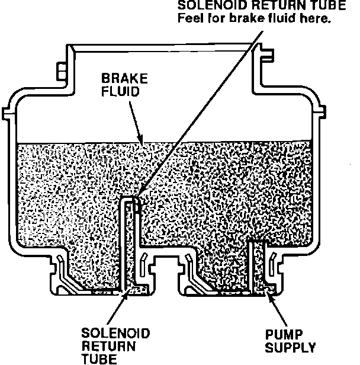

Solenoid Leak Check
1. Place the car on level ground with the wheels blocked. Put the transmission in neutral (M/T models) or Park (A/T models).2. Record the fluid levels in the modulator and the master cylinder reservoirs.
3. Remove the ALB 2.3 fuse from the under-hood fuse/relay box for at least three seconds to erase the control unit's memory. Reinstall the fuse.
4. Remove the modulator reservoir filter.
5. Connect the ALB Checker, T/N 07HAJ-SG0010B, and turn the Mode Selector to "1."
6. Start the engine and release the parking brake. Push the Start Test button on the ALB Checker.
^ If the ALB pump runs, note when it starts, and quickly go to step 7.
^ If the ALB pump doesn't run, the cause of the Code 1 has corrected itself. Refill the modulator reservoir to the MAX level, and return the car to the customer.

7. While the ALB pump is running, place your finger over the top of the solenoid return tube in the modulator reservoir. Note when the pump stops.
^ If you can feel brake fluid coming from the return tube, one of the solenoids is leaking. Go to Solenoid Flushing.
^ If you feel no fluid coming from the return tube and the pump runs for less than 120 seconds, the cause of the Code 1 has corrected itself. Refill the modulator reservoir to the MAX level, and return the car to the customer.
^ If you feel no fluid coming from the return tube, and if the pump runs for 120 seconds (Anti-lock indicator light comes on, control unit indicates Code 1), call Engineering Tech Line with the fluid levels you recorded in step 2.